Voorwoord
Onlangs volgde ik een webinar bij STATA over analyse van survival data (https://www.stata.com/training/webinar_series/survival-analysis/). Vervolgens ben ik op zoek gegaan naar een tutorial in R over survival analyse en kwam terecht by deze interessante tutorial van Emily Zabore. Deze had ik al eens eerder zien staan maar dit was het moment om er eens goed naar te kijken. Om mij de techniek goed eigen te maken heb ik deze voor het grootste deel naar het Nederlands toe omgezet en waar nodig bewerkt. Alle credits gaan naar Emily Zabore die dit zo helder en duidelijk op rij heeft gezet (hartelijke dank, Emily). Deze tutorial is dus een introductie op survival analyse en hoe deze techniek in R uit te voeren. Emily Zabore presenteerde dit voor op R-Presentatie serie van het Memorial Sloan Kettering Cancer Center in New York op 30 augustus 2018. Daarna heeft ze deze aangepast voor een meer intensievere training op hetzelfde centrum in Maart 2019. De informatie kun je vinden op haar Github repository waar je deze tutorial en de bron-files kunt vinden.
Deel 1: Introductie op Survival Analyse
Deze tutorial bevat enige basisinformatie over survival analyse en de volgende uitgaven kunnen jou hierbij verder helpen:
Clark, T., Bradburn, M., Love, S., & Altman, D. (2003). Survival analysis part I: Basic concepts and first analyses. 232-238. ISSN 0007-0920.
M J Bradburn, T G Clark, S B Love, & D G Altman. (2003). Survival Analysis Part II: Multivariate data analysis – an introduction to concepts and methods. British Journal of Cancer, 89(3), 431-436.
Bradburn, M., Clark, T., Love, S., & Altman, D. (2003). Survival analysis Part III: Multivariate data analysis – choosing a model and assessing its adequacy and fit. 89(4), 605-11.
Clark, T., Bradburn, M., Love, S., & Altman, D. (2003). Survival analysis part IV: Further concepts and methods in survival analysis. 781-786. ISSN 0007-0920.
Pakketten
Enkele R-pakketten zullen in ieder geval gebruikt worden:
lubridatesurvivalsurvminer
Zorg ervoor dat ze geïnstalleerd zijn (wel doen, anders werkt het niet) en open ze vervolgens zo:
Wat zijn survival data?
Het gaat om Tijd-tot-gebeurtenis (Time-to-event) data die bestaan uit een aparte starttijd en eindtijd.
Voorbeelden uit kankeronderzoek zijn:
- Tijd van operatie tot dood;
- Tijd van start van de behandeling tot progressie;
- Tijd van antwoord op herhaling.
Voorbeelden uit andere velden:
Tijd-tot-gebeurtenis data zijn in verschillende velden algemeen, waaronder:
- Tijd van HIV infectie tot ontwikkeling van AIDS;
- Tijd tot hardaanval;
- Tijd tot begin van alcoholmisbruik;
- Tijd tot initiatie van sexuele activiteit;
- Tijd tot machine niet meer goed functioneert.
Hoe survival analyse ook wel wordt genoemd
Omdat survival analyse in allerlei velden wordt gebruikt, kent het ook verschillende namen:
- Betrouwbaarheids-analyse;
- Duur-analyse;
- Gebeurtenisgeschiedenis-analyse;
- Tijd-tot-gebeurtenis-analyse.
De longdataset
De long dataset is beschikbaar via het survival pakket in R. De data bevatten subjecten met gevorderde longkanker van de North Central Cancer Treatment Group. Enkele variabelen (waarvoor ik de Engelse namen gebruik zoals ze in de dataset voorkomen) die we zullen gebruiken om methodes aan te tonen zijn:
- time: Overlevingstijd (Survival tijd) in dagen;
- status: censoring status 1=censored, 2=dood;
- sex: Man=1 Vrouw=2.
Wat is censoring?

RICH JT, NEELY JG, PANIELLO RC, VOELKER CCJ, NUSSENBAUM B, WANG EW. A PRACTICAL GUIDE TO UNDERSTANDING KAPLAN-MEIER CURVES. Otolaryngology head and neck surgery: official journal of American Academy of Otolaryngology Head and Neck Surgery. 2010;143(3):331-336. doi:10.1016/j.otohns.2010.05.007.
Typen van censoring
Een subject kan gecensored zijn vanwege:
- Omdat we ze niet meer te volgen zijn;
- Ze uit de studie zijn gestapt;
- Er geen gebeurtenis kon worden vastgesteld bij het einde van de vaststaande studieperiode.
Dit zijn voorbeelden van rechts censoring.
Links censoring en interval censoring zijn ook mogelijk en er zijn methodes om dit soort data te analyseren, maar hier beperken we ons tot rechts censoring.
Gecensorde survival data
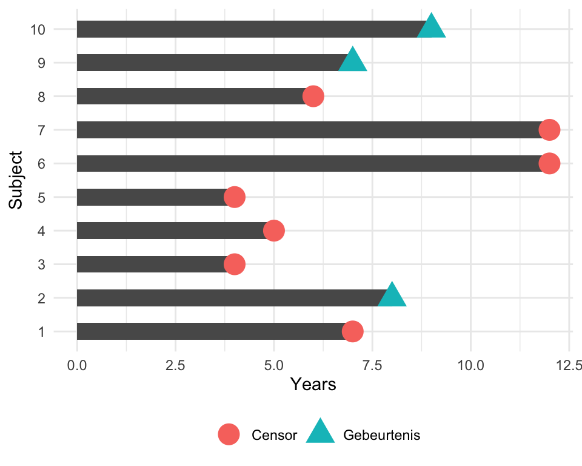
Hoe zouden we in dit voorbeeld de proportie vaststellen van hen die gebeurtenisvrij zijn bij 10 jaar?
Subjecten 6 en 7 zijn gebeurtenisvrij bij 10 jaar. Subjecten 2, 9 en 10 hadden de gebeurtenis voor 10 jaar. Subjecten 1, 3, 4, 5 en 8 zijn gecensord voor 10 jaar, dus we weten niet of ze de gebeurtenis hebben of niet bij 10 jaar - hoe kunnen we deze subjecten incorpereren in onze schatting?
Distributie van follow-up tijd
- Gecensorde subjecten geven nog steeds informatie dus zijn geschikt om in de analyse mee te nemen;
- Distributie van follow-up tijden is scheef en kunnen verschillen tussen gecensorde patiënten en hen met gebeurtenissen;
- Follow-up tijden zijn altijd positief.
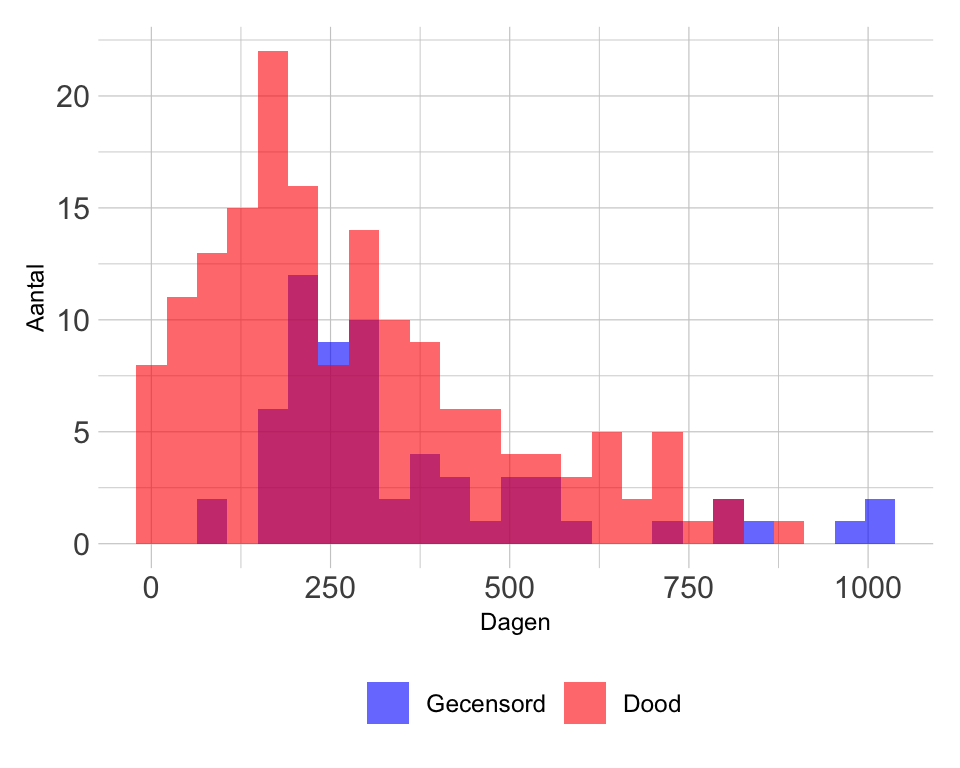
Componenten van survival data
Voor subject \(i\):
- Gebeurtenistijd \(T_i\)
- Censortijd \(C_i\)
Gebeurtenis indicator \(\delta_i\):
- 1 als gebeurtenis geobserveerd (bv. \(T_i \leq C_i\))
- 0 als gecensord (bv. \(T_i > C_i\))
Geobserveerde tijd: \(Y_i = \min(T_i, C_i)\)
De geobserveerde tijden en een gebeurtenis indicator zitten in de long data
- time: Survival tijd in dagen (\(Y_i\))
- status: censor status 1=gecensord, 2=dood (\(\delta_i\))
| inst | time | status | age | sex | ph.ecog | ph.karno | pat.karno | meal.cal | wt.loss |
|---|---|---|---|---|---|---|---|---|---|
| 3 | 306 | 2 | 74 | 1 | 1 | 90 | 100 | 1175 | NA |
| 3 | 455 | 2 | 68 | 1 | 0 | 90 | 90 | 1225 | 15 |
| 3 | 1010 | 1 | 56 | 1 | 0 | 90 | 90 | NA | 15 |
| 5 | 210 | 2 | 57 | 1 | 1 | 90 | 60 | 1150 | 11 |
| 1 | 883 | 2 | 60 | 1 | 0 | 100 | 90 | NA | 0 |
| 12 | 1022 | 1 | 74 | 1 | 1 | 50 | 80 | 513 | 0 |
Omgaan met data (van datum) in R
Data laten vaak de start en einddata zien eerder dan de voorberekende survival tijden. De eerste stap is om er zeker van te zijn dat deze als data in R zijn geformatteerd.
Om het duidelijk te maken, laten we eens een kleine dataset als voorbeeld maken met de variabelen sx_date voor operatiedatum en last_fup_date voor de laatste follow-up datum.
# A tibble: 3 x 2
sx_date last_fup_date
<chr> <chr>
1 2007-06-22 2017-04-15
2 2004-02-13 2018-07-04
3 2010-10-27 2016-10-31 We zien dat het beide chr-variabelen betreft, wat vaker het geval is. Maar het is nodig ze naar data-variabelen te formatteren.
Formatteren van data - basis R
# A tibble: 3 x 2
sx_date last_fup_date
<date> <date>
1 2007-06-22 2017-04-15
2 2004-02-13 2018-07-04
3 2010-10-27 2016-10-31 - Merk op dat in basis
Rhet format zowel de onderscheider als het symbool moet omvatten. Dus als jouw data in format m/d/Y staan dan heb je hetformat = "%m/%d/%Y"nodig. - Voor een hele lijst van dataformat symbolen kun je kijken naar https://www.statmethods.net/input/dates.html
Formatteren van data-lubridate pakket
We kunnen ook het lubridate pakket gebruien om data te formatteren. In in dit geval, gebruik de ymd functie
# A tibble: 3 x 2
sx_date last_fup_date
<date> <date>
1 2007-06-22 2017-04-15
2 2004-02-13 2018-07-04
3 2010-10-27 2016-10-31 - Merk op dat hier de onderscheiders in de
Roptie niet hoeven worden toegepast. - De help pagina voor
?dmyzullen je alle format opties kunnen geven.
Calculeren van survival tijden - basis R
Nu de data zijn geformatteerd, moeten we het verschil tussen start en eindtijd in een bepaalde eenheid uitdrukken,meestal maanden of jaren. In basis R, wordtdifftime gebruikt om het aantal dagen te berekenen tussen onze twee data en dit te converteren naar een numerieke waarde met as.numeric. Dan zetten we het over naar dagen door het te delen door 365.25, het gemiddelde aantal dagen in een jaar.
# A tibble: 3 x 3
sx_date last_fup_date os_yrs
<date> <date> <dbl>
1 2007-06-22 2017-04-15 9.82
2 2004-02-13 2018-07-04 14.4
3 2010-10-27 2016-10-31 6.01Berekenen van survival tijden - lubridate
Als we het lubridate pakket gebruiken, dan drukt %--% een tijd interval uit, dat dan geconverteerd wordt naar het aantal seconden door as.duration te gebruiken en tenslotte naar jaren door het te delen door dyears(1), wat het aantal seconden in een jaar geeft.
# A tibble: 3 x 3
sx_date last_fup_date os_yrs
<date> <date> <dbl>
1 2007-06-22 2017-04-15 9.82
2 2004-02-13 2018-07-04 14.4
3 2010-10-27 2016-10-31 6.01- Notitie: we moeten het
lubridatepakket laden doorlibraryte gebruiken en zo toegang te krijgen tot specifieke functies.
Gebeurtenis indicator
Voor de componenten van survivaldata noemde ik eerder de gebeurtenisindicator:
Gebeurtenisindicator \(\delta_i\):
- 1 als de gebeurtenis heeft plaatsgevonden (bv. \(T_i \leq C_i\))
- 0 als het gecensord is (i.e. \(T_i > C_i\))
Echter, in R accepteert de Surv-function ook ‘TRUE/FALSE’ (’TRUE = gebeurtenis) of 1/2 (2 = gebeurtenis).
In de lung data, hebben we:
- status: censoring status 1=gecensord, 2=dood
Survivalfunctie
De waarschijnlijkheid dat een subject zal overleven voorbij een bepaalde gespecificeerde tijd
\[S(t) = Pr(T>t) = 1 - F(t)\]
\(S(t)\): survivalfunctie \(F(t) = Pr(T \leq t)\): cumulatieve distributiefunctie
In theorie is de survivalfunctie gelijdelijk; in de praktijk observeren we gebeurtenissen op een discrete tijdschaal.
Survivalwaarschijnlijkheid
- Survivalwaarschijnlijkheid op een bepaalde tijd, \(S(t)\), is een conditionele waarschijnlijkheid van overleven voorbij die tijd gegeven dat een individu overleefd heeft juist voorafgaand aan die tijd.
- Het kan worden geschat als het aantal patiënten die leven zonder verlies van follow-up gegevens op die tijd, gedeeld door het aantal patiënten die leven voorafgaand aan dat moment.
- De Kaplan-Meier schatting van survivalwaarschijnlijkheid is het product van deze conditionele waarschijnlijkheden tot op dat moment.
- Op tijd 0, de survivalwaarschijnlijkheid is 1, bv. \(S(t_0) = 1\)
Creëren van survivalobjecten
De Kaplan-Meier methode is de meest algemene manier om survivaltijden en -waarschijnlijkheden te schatten. Het is een niet-parametrische benadering die resulteert in een stapsgewijze-functie, met steeds een stap naar beneden iedere keer wanneer de gebeurtenis plaatsvindt.
- De
Survfunctie van hetsurvivalpakket creëert een survival object voor gebruik als antwoord in een modelformule. Er is een ingang voor elk subject dat de survivaltijd is, dat wordt gevolgd door een+als het subject gecensord is. Laten we eens naar de eerste tien observaties kijken, dat maakt meer duidelijk:
[1] 306 455 1010+ 210 883 1022+ 310 361 218 166 Schatten van de survivalcurves met de Kaplan-Meier methode
- De
survfitfunctie creëert survivalcurves die gebaseerd zijn op een formule. Laten we de overallsurvivalcurve eens genereren voor de hele cohort, benoem het als het objectf1, en kijk naar de namen(names) van dat object:
[1] "n" "time" "n.risk" "n.event" "n.censor"
[6] "surv" "std.err" "cumhaz" "std.chaz" "type"
[11] "logse" "conf.int" "conf.type" "lower" "upper"
[16] "call" Enkele sleutelcomponenten van dit survfit object dat wordt gebruikt om survivalcurves te maken omvatten:
time, die de start en eindpunten van elk tijdinterval inhouden
surv, die de survivalwaarschijnlijkheid inhouden die corresponderen met elke tijd (time)
Kaplan-Meier grafiek - basis R
Nu plotten we het survfit object met basis R om de Kaplan-Meier grafiek te krijgen.
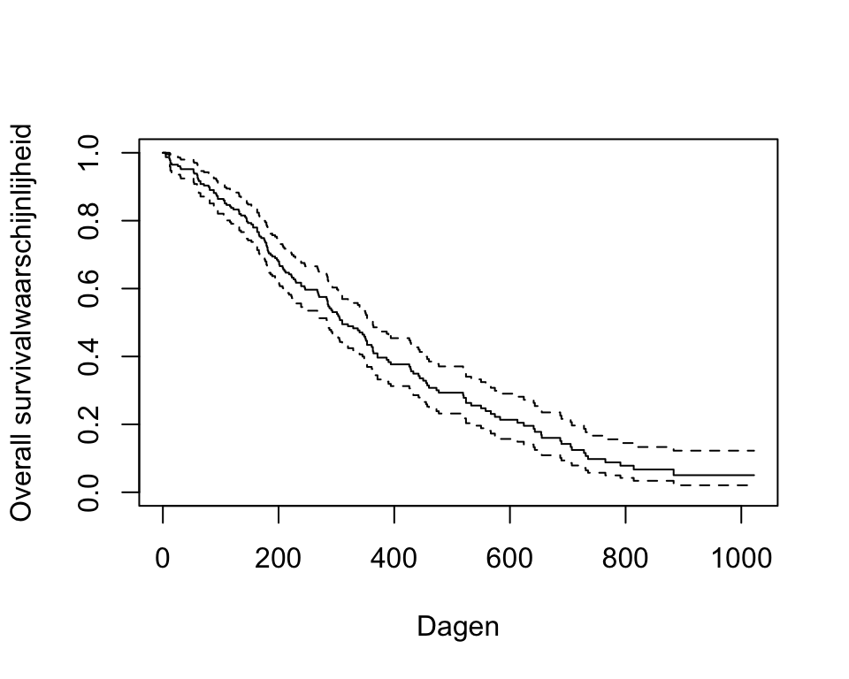
- De standaard grafiek in basis
Rtoont de stapfunctie (doorlopende lijn) met de betrouwbaarheidsintervallen die ermee samenhangen (stippellijnen);
- Horizontale lijnen representeren de survivalduur voor het interval;
- De interval beëindigd door een gebeurtenis;
- De hoogte van de verticale lijnen laat de verandering in cumulatievewaarschijnlijkheid zien;
- Gecensorde observaties, aangegeven met vinkjes, reduceren de cumulatieve survival tussen intervallen. (Opmerking de vinkjes voor gecensorde patiënten worden niet in deze standaardgrafiek getoond, maar worden toegevoegd door de optie
mark.time = TRUE).
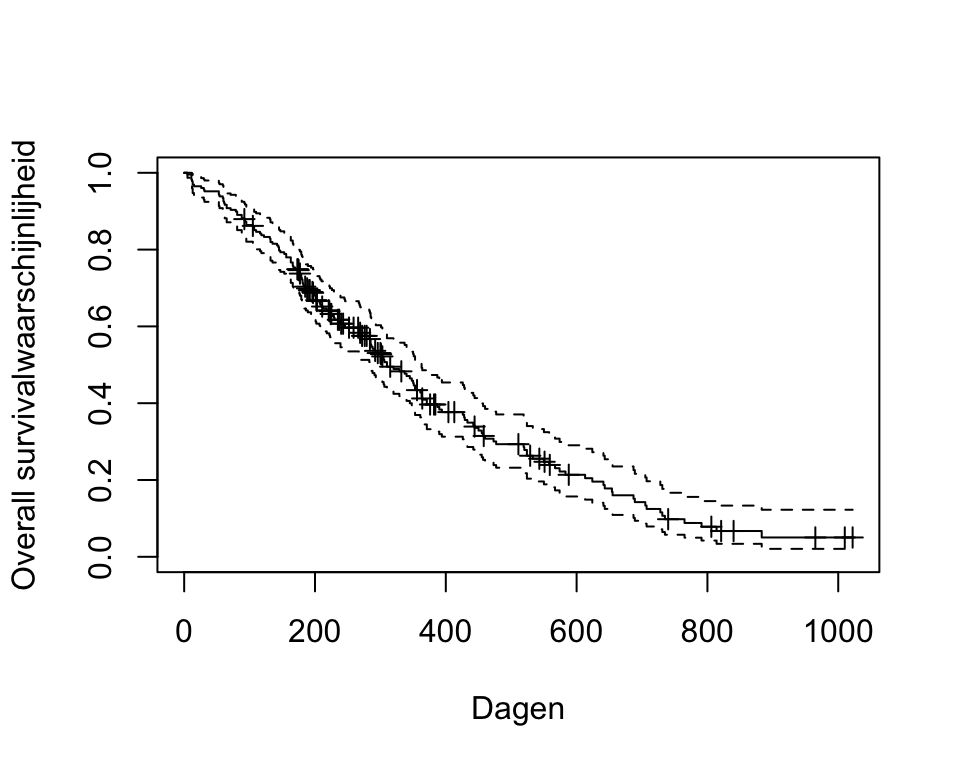
Kaplan-Meier grafiek - ggsurvplot
Als alternatief kun je de ggsurvplot functie gebruiken van het survminer pakket dat op ggplot2 is gebouwd, en dat kan worden gebruikt om de Kaplan-Meier grafieken te maken. Bekijk de cheatsheet maar eens voor het survminer pakket.
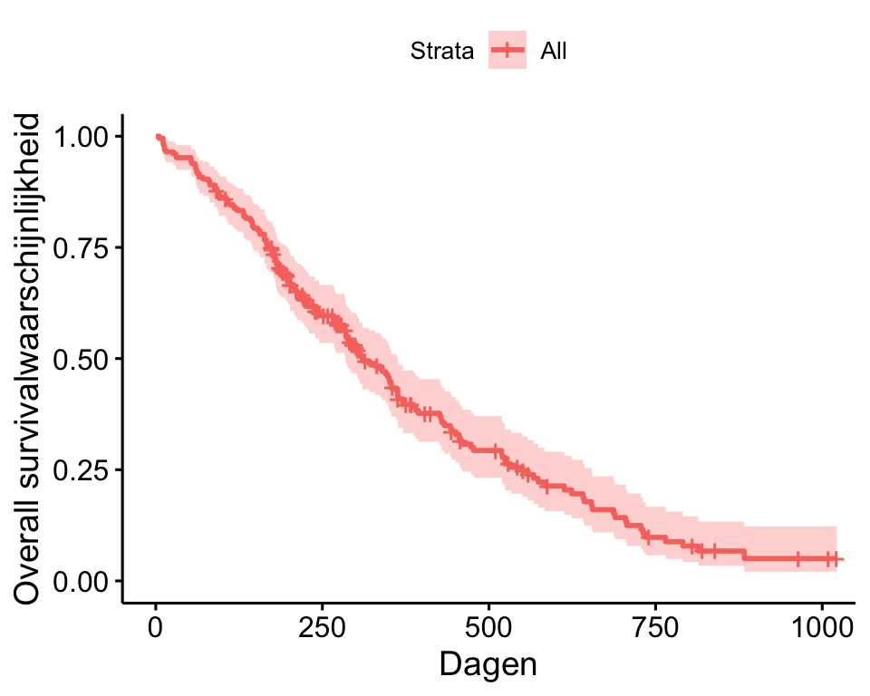
- De standaardgrafiek van
ggsurvplotlaat de stapfunctie (doorlopende lijn) zien met bijbehorende betrouwbaarheidsbanden (donkere gebied);
- De vinkjes voor gecensorde patienten worden hier wel standaard getoond, enigszins onduidelijk aangegeven in de lijn in dit voorbeeld en kan worden weggehaald met de optie
censor = FALSE.
Schatten van \(x\)-jaar overleven
Een kwantiteit waar we in de survivalanalyse vaak in geïnteresseerd zijn is de waarschijnlijkheid van overleven voorbij een bepaald aantal (\(x\)) jaren.
Bijvoorbeeld, om de waarschijnlijkheid te schatten van overleven bij \(1\) jaar, gebruik je summary met het times argument (Opgelet de time variabele in de lung data is eigenlijk in dagen, dus we moeten times = 365.25 gebruiken).
Call: survfit(formula = Surv(time, status) ~ 1, data = lung)
time n.risk n.event survival std.err lower 95% CI upper 95% CI
365 65 121 0.409 0.0358 0.345 0.486We vinden dat de \(1\)-jaar waarschijnlijkheid van overleven in deze study 41% is.
De boven- en ondergrens van het 95% betrouwbaarheidsinterval wordt ook getoond.
\(x\)-jaar survival en de survivalcurve
De \(1\)-jaar survivalwaarschijnlijkheid is het punt op de y-as dat correspondeert met \(1\) jaar op de x-as voor de survivalcurve.
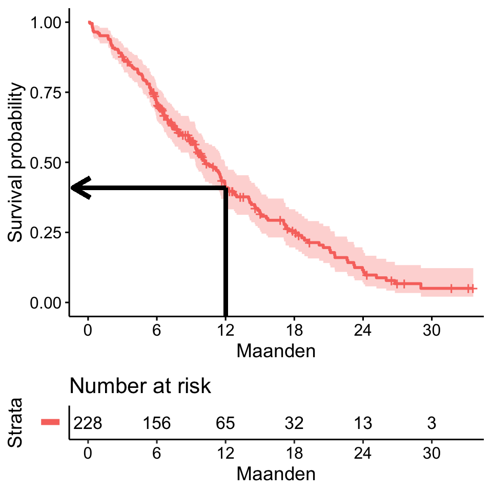
\(x\)-jaar survival wordt vaak niet correct geschat
Wat gebeurt als je een “naïeve” schatting gebruikt?
121 van de 228 patiënten stierven bij \(1\) jaar dus:
\[\Big(1 - \frac{121}{228}\Big) \times 100 = 47\%\] - Je krijgt een incorrecte schatting van de \(1\)-jaar survivalwaarschijnlijheid als het feit over het hoofd ziet dat 42 patiënen waren gecensord voor \(1\) jaar.
- Herinner dat de correcte schatting van de \(1\)-jaar survivalwaarschijnlijkheid 41% was.
Impact op \(x\)-jaar survival door censoring over het hoofd te zien
- Stel twee studies, met elk 228 subjecten. In iedere studie zijn er 165 doden. Geen censoring bij de een (oranje lijn), 63 patiënten gecensord in de andere (blauwe lijn);
- Ontkennen van censoring leidt tot een overschatting van de overall survivalwaarschijnlijkheid, omdat de gecensorde subjecten alleen informatie bijdragen voor het deel van de follow-up tijd en dan vallen ze uit de risk set, dus drukken ze de cumulatieve waarschijnlijkheid van de survival naar beneden.
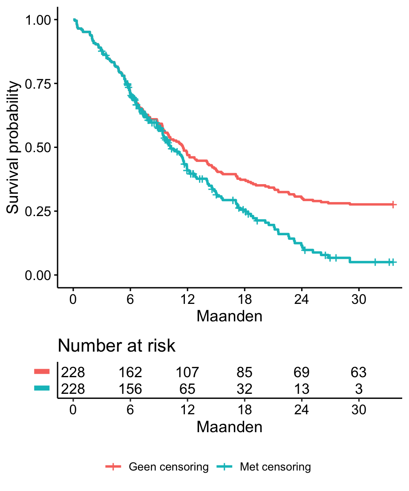
Schatten van de mediaan survivaltijd
Een andere kwantiteit die vaak interessant is voor overlevingsanalyse is de gemiddelde overlevingstijd, die we kwantificeren met behulp van de mediaan. Er wordt niet verwacht dat de overlevingstijd normaal wordt verdeeld, dus het gemiddelde is geen passende samenvatting.
We kunnen dit rechtstreeks verkrijgen uit ons survfit object
Call: survfit(formula = Surv(time, status) ~ 1, data = lung)
n events median 0.95LCL 0.95UCL
228 165 310 285 363 We zien dat de mediaan survivaltijd 310 dagen is. De onder- en bovengrens van het 95% betrouwbaarheidsinterval worden ook gegeven.
Mediaan overlevingstijd and de overlevingscurve
Mediaan survival is de tijd die correspondeert met de overlevingswaarschijnlijkheid van \(0.5\):
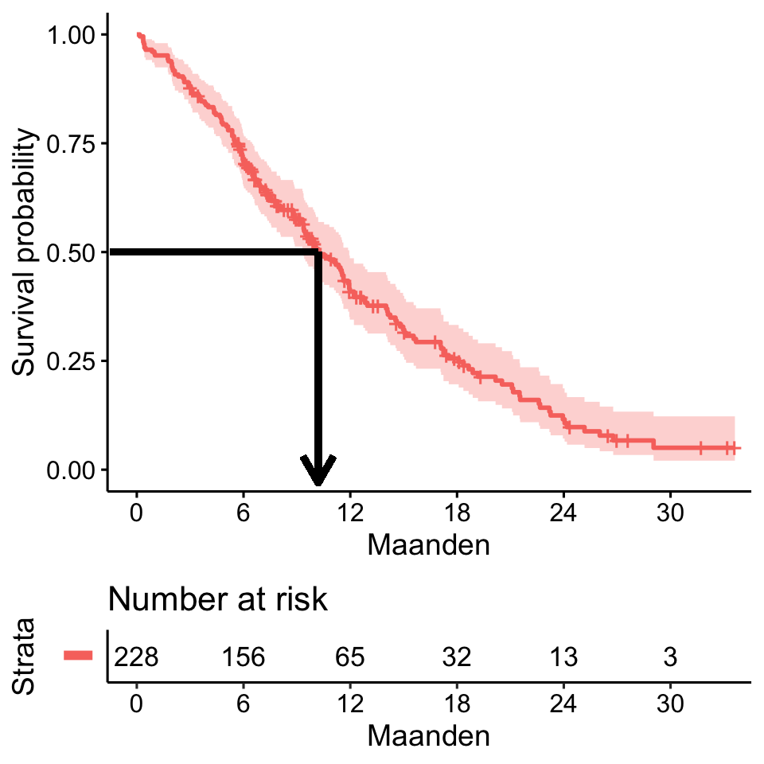
De mediaan van overleving wordt vaak verkeerd geschat
Wat gebeurt als je een “naïeve” schatting gebruikt?
Vat de mediaan overlevingstijd samen onder de 165 patiënten die stierven
median_surv
1 226- Je krijgt een verkeerde schatting van de mediaan overlevingstijd van 226 dagen als je het feit ontkent dat gecensorde patiënten ook bijdragen aan de follow-up tijd.
- Onthoud dat de correcte schatting van de mediaan overlevingstijd 310 dagen is.
Impact op de overlevingsmediaan wanneer je censoring negeert
- Negeren van censoring creëert een kunstmatig lagere overlevinscurve omdat de follow-up tijd die gecensorde patiënten bijdragen er buiten wordt gehouden (paarse lijn).
- De ware overlevingscurve voor de
lungdata zie je voor de vergelijking in blauw staan.
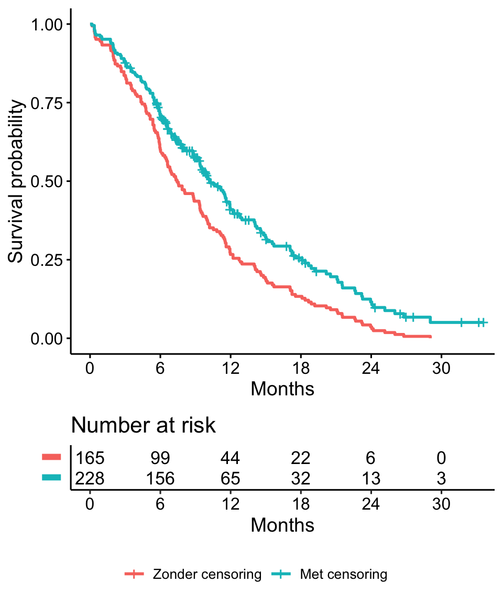
Vergelijken van overlevingstijd tussen groepen
- We kunnen significantie testen tussen-groepen uitvoeren met een ‘log-rank test’.
- De ‘log-rank test’ weegt observaties gelijk over de hele follow-up tijd en is de meest algemene manier om overlevingstijden tussen groepen te vergelijken.
- Er zijn ook versie die meer gewicht geven aan de eerdere of latere follow-up die meer geschikt zijn afhankelijk van de onderzoeksvraag (zie
?survdiffvoor verschillende test opties).
We krijgen de log-rank p-waarde wanneer we de survdiff functie gebruiken. Bijvoorbeeld, we kunnen testen of er een verschil was in overlevingstijd wat sexe betreft in de lung data.
Call:
survdiff(formula = Surv(time, status) ~ sex, data = lung)
N Observed Expected (O-E)^2/E (O-E)^2/V
sex=1 138 112 91.6 4.55 10.3
sex=2 90 53 73.4 5.68 10.3
Chisq= 10.3 on 1 degrees of freedom, p= 0.001 Extraheren van informatie van een survdiff object
Het is lastig om een p-waarde te extraheren van de resultaten van survdiff. Hier is een coderegel om dat te doen.
[1] 0.001311165Of er is de sdp functie in het ezfun pakket, dat je kunt installeren via devtools::install_github("zabore/ezfun"). Het geeft een opgemaakt p-value terug.
[1] 0.001Het Cox regressiemodel
We kunnen een effectgrootte voor een enkele variabele kwantificeren of meer dan één variabele opnemen in een regressiemodel wanneer we rekening willen houden met de effecten van meerdere variabelen.
Het Cox-regressiemodel is een semi-parametrisch model dat kan worden gebruikt voor univariabele en multivariabele regressiemodellen met overlevingsuitkomsten.
\[h(t|X_i) = h_0(t) \exp(\beta_1 X_{i1} + \cdots + \beta_p X_{ip})\]
\(h(t)\): gevaar (‘hazard’), of de mate waarin de gebeurtenis plaatsvindt \(h_0(t)\): onderliggende baseline van het gevaar (‘hazard’).
Enkele aannames van het model:
- non-informatieve censoring
- proportionele ‘hazards’
Opgelet: parametrische regressiemodels voor overlevingsuitkomsten zijn ook beschikbaar, daar zal hier niet op worden ingegaan.
We kunnen regressiemodellen voor survivaldata draaien door de coxph functie te gebruiken, die een Surv object aan de linkerkant neemt en een standaard regressie formule in R aan de rechterkant hanteert.
Call:
coxph(formula = Surv(time, status) ~ sex, data = lung)
coef exp(coef) se(coef) z p
sex -0.5310 0.5880 0.1672 -3.176 0.00149
Likelihood ratio test=10.63 on 1 df, p=0.001111
n= 228, number of events= 165 Formatteren van Cox regressieresultaten
We kunnen een opgeschoonde versie van de output zien door de tidy functie van het broom pakket te gebruiken:
| term | estimate | std.error | statistic | p.value |
|---|---|---|---|---|
| sex | 0.5880028 | 0.1671786 | -3.176385 | 0.0014912 |
Of door tbl_regression te gebruiken van het gtsummary pakket.
| Characteristic | HR1 | 95% CI1 | p-value |
|---|---|---|---|
| sex | 0.59 | 0.42, 0.82 | 0.001 |
|
1
HR = Hazard Ratio, CI = Confidence Interval
|
|||
Hazard ratio’s
- De interesse bij een Cox-regressiemodel gaat uit naar een hazard ratio (HR). De HR staat voor de verhouding van de gevaren tussen twee groepen op een bepaald moment;
- De HR wordt geïnterpreteerd als het momentane tempo waarin de gebeurtenis zich voordoet bij degenen die nog steeds risico lopen voor de gebeurtenis. Het is geen risico, maar wordt wel als zodanig geïnterpreteerd;
- Als je een regressieparameter hebt van \(\beta\) (van kolom
estimatein onscoxph) dan is HR = \(\exp(\beta)\);
- Een HR < 1 duidt op een verminderd doodsgevaar, terwijl een HR > 1 duidt op een verhoogd doodsgevaar;
- Dus onze HR = 0.59 betekent dat er ongeveer 0.6 keer zoveel vrouwen sterven als mannen, op een bepaald moment.
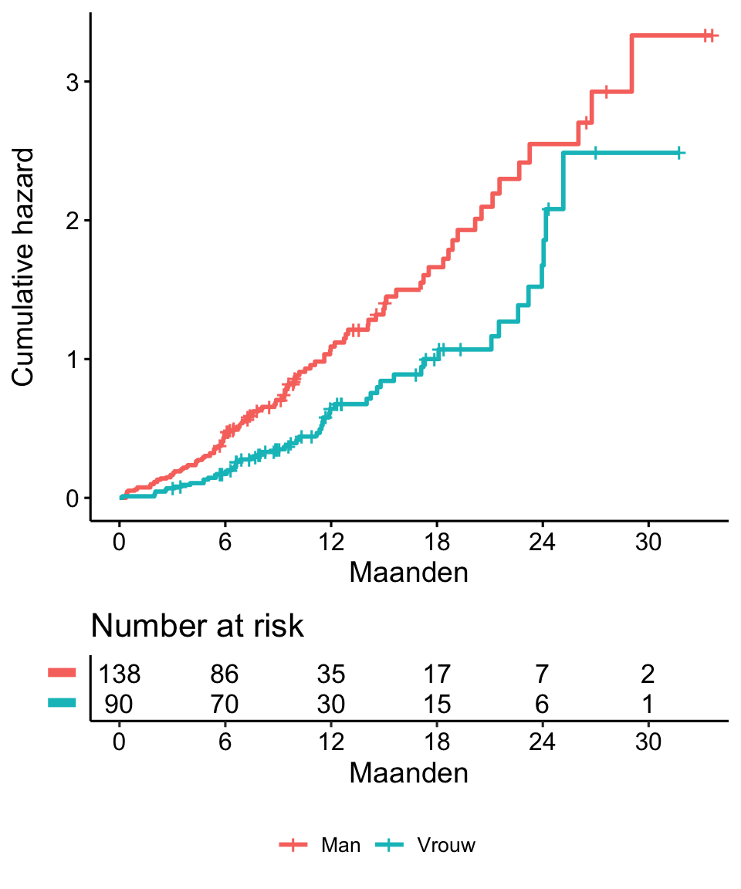
Deel 2: Oriëntatiepuntanalyse en Tijd Afhankelijke Covariaten
In deel 1 hebben we met behulp van log-rank tests en Cox regressie de associaties tussen covariaten die van belang zijn en overlevingsresultaten onderzocht.
Maar deze analyses zijn gebaseerd op het meten van het covariaat op baseline, dat wil zeggen, voordat de vervolgtijd voor het evenement begint.
Wat gebeurt er als u geïnteresseerd bent in een covariaat dat wordt gemeten nadat de vervolgtijd begint?
Voorbeeld: Tumorreactie
In het algemeen wordt de totale overleving gemeten vanaf het begin van de behandeling en de interesse gaat daarbij uit naar de associatie tussen de volledige respons op de behandeling en de overleving.
Anderson et al. (JCO, 1983) beschreven waarom tradionele methoden zoals log-rank tests of Cox regressie in dit scenario bevooroordeeld zijn ten gunste van de responders en stelden de oriëntatiepuntaanpak voor. De nul-hypothese in de landmarkbenadering is dat het overleven van een oriëntatiepunt niet afhankelijk is van de status van de respons bij dat punt.
Anderson, J., Cain, K., & Gelber, R. (1983). Analysis of survival by tumor response. Journal of Clinical Oncology : Official Journal of the American Society of Clinical Oncology, 1(11), 710-9.
Andere voorbeelden
Enkele andere mogelijke covariaten die van belang zijn bij kankeronderzoek en die niet op de basislijn kunnen worden gemeten, zijn onder andere:
- transplantatiefout
- ent versus gastheer ziekte
- tweede resectie
- adjuvante therapie
- naleving
- ongunstige gebeurtenissen
Voorbeeld data - de BMT dataset van het SemiCompRisks pakket
Gegevens over 137 beenmergpatiënten. Variabelen van belang zijn onder meer:
T1tijd(in dagen) tot dood or laatste follow-updelta1dood indicator; 1-Dood, 0-LevendTAtijd (in dagen) tot ent versus gastheer ziektedeltaAacute ent versus gastheer ziekte indicator; 1-Ontwikkelt ent versus gastheer ziekte, 0-Nooit een ent versus gastheer ziekte ontwikkelt.
Laten we de gegevens laden voor gebruik in de voorbeelden.
Oriëntatiepuntmethode
- Selecteer een vaste tijd na de basislijn als uw oriëntatiepunt. Opgelet: dit moet worden gedaan op basis van klinische informatie, voorafgaand aan de inspectie van de gegevens.
- Subset populatie voor degenen die volgen ten minste tot aan de mijlpaal tijd. Opgelet: rapporteer altijd het nummer dat is uitgesloten vanwege het evenement van belang of de censuur vóór het tijdstip van de mijlpaal.
- Bereken de follow-up van de landmarktijd en voer de traditionele log-ranktests of Cox-regressie toe.
In de BMT data interesseert men zich voor de associatie tussen acute ent versus gastheer ziekte (op zijn Engels ‘aGVHD’) en overleving. Maar dit wordt beoordeeld na de transplantatie, wat onze basislijntijd is of bij het begin van de follow-up-tijd.
Stap 1 Selecteer een mijlpaal tijd
Meestal treedt de ziekte op binnen de eerste 90 dagen na de transplantatie, dus gebruiken we een 90-dagen oriëntatiepunt.
De interesse gaat uit naar de associatie tussen acute enting versus gastheerziekte (‘aGVHD’) en overleving. Maar ‘aGVHD’ wordt beoordeeld na de transplantatie, wat onze basislijn is, of het begin van de follow-up, tijd.
Step 2 Subset populatie voor degenen die gevolgd zijn ten minste tot mijlpaal tijd
Dit reduceert onze sampleomvang van 137 tot 122.
- Alle 15 data zijn exclusief patiënten die voor het 90-daags oriëntatiepunt zijn overleden.
De belangstelling gaat uit naar het verband tussen acute enting versus gastheerziekte (‘aGVHD’) en overleving. Maar ‘aGVHD’ wordt vastgesteld na de transplantatie, wat onze basislijn is of het begin van de follow-up-tijd.
Step 3 Berekenen van follow-up tijd vanuit het oriëntatiepunt en toepassen van traditionele methodes.
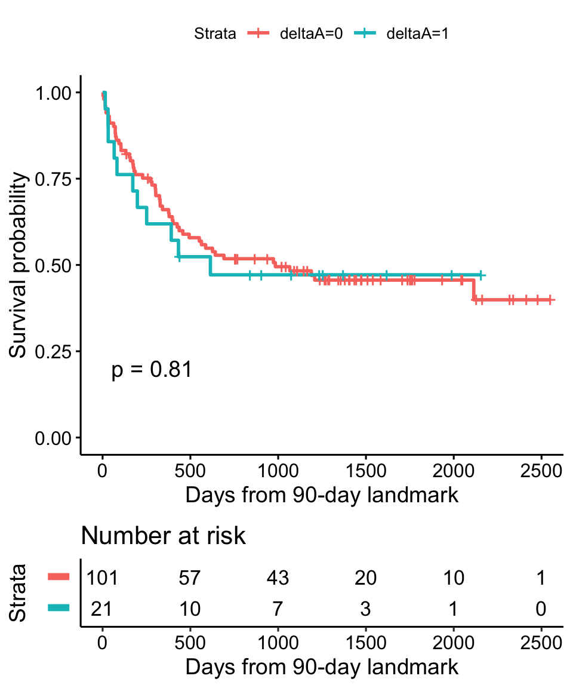
Cox-regressie voor oriëntatievoorbeeld bij gebruik van BMT data
In de Cox-regressie kun je de subset option in coxph gebruiken om die patiënten uit te sluiten die niet zijn gevolgd gedurende de oriëntatietijd.
| Characteristic | HR1 | 95% CI1 | p-value |
|---|---|---|---|
| deltaA | 1.08 | 0.57, 2.07 | 0.8 |
|
1
HR = Hazard Ratio, CI = Confidence Interval
|
|||
Tijd-afhankelijke covariaat
Een alternatief voor de oriëntatieanalyse is de incorporatie van een tijd-afhankelijke covariaat. Dit is beter geschikt wanneer
- de waarde van covariaat over tijd verandert;
- als er geen duidelijke oriëntatietijd is;
- wanneer de oriëntatie tot heel veel uitsluitingen leidt.
Data setup van een tijd-afhankelijke covariaat
Analyse van tijdafhankelijke covariaten in R veronderstelt de setup van een speciale dataset. Informatie hierover vind je in een gedetailleerd artikel door de auteur van het survival pakket Using Time Dependent Covariates and Time Dependent Coefficients in the Cox Model.
Er was geen ID variable in het BMT data, dat nodig is om die special dataset te maken. Dus maak er een die heet my_id.
Gebruik de tmerge functie met de event en tdc functieopties om die speciale dataset te creëren.
tmergecreëert een lange dataset met verschillende tijdintervallen voor de verschillende covariaatwaarden voor elke patiënt;
eventcreëert de nieuwe tijdindicator die samengaat met de gecreëerde tijdintervallen;
tdccreëert de tijd-afhankelijke covariaatindicator die samengaat met de gecreëerde tijdintervallen.
Time-afhankelijke covariaat - voorbeeld van enkele patiënten
Om te zien wat dit doet, laten we eens kijken naar de eerste vijf individuele patiënten.
De variabelen waar onze interesse naar uitgaan zien er in de originele data als volgt uit:
my_id T1 delta1 TA deltaA
1 1 2081 0 67 1
2 2 1602 0 1602 0
3 3 1496 0 1496 0
4 4 1462 0 70 1
5 5 1433 0 1433 0De nieuwe dataset voor dezelfde patiënten ziet er als volgt uit:
my_id T1 delta1 id tstart tstop death agvhd
1 1 2081 0 1 0 67 0 0
2 1 2081 0 1 67 2081 0 1
3 2 1602 0 2 0 1602 0 0
4 3 1496 0 3 0 1496 0 0
5 4 1462 0 4 0 70 0 0
6 4 1462 0 4 70 1462 0 1
7 5 1433 0 5 0 1433 0 0Tijd-afhankelijke covariaat - Cox regressie
Nu kunnen we de tijd-afhankelijke covariaat analyseren zoals we gewend zijn met Coxregressie met coxph en een aanpassing in het gebruik van Surv door zowel de argumenten time en time2 op te nemen.
| Characteristic | HR1 | 95% CI1 | p-value |
|---|---|---|---|
| agvhd | 1.40 | 0.81, 2.43 | 0.2 |
|
1
HR = Hazard Ratio, CI = Confidence Interval
|
|||
Samenvatting
We vinden dat acute ent versus gastheer ziekte niet significant geassocieerd is met de dood met behulp van hetzij oriëntatieanalyse of met inzet van een tijdafhankelijke covariate.
Vaak zal men oriëntatieanalyse willen gebruiken voor de visualisatie van een enkel covariaat en Cox regressie met een tijdsafhankelijk covariaat voor univariabele en multivariabele modellering.
Part 3: Concurrerende Risico’s
Pakketten
Het belangrijkste pakket om te gebruiken in concurrerende risico analyse is:
cmprsk
Wat zijn concurrerende risico’s?
Hier is sprake van wanneer subjecten meerdere mogelijke gebeurtenissen kennen in een tijd tot gebeurtenissetting.
Voorbeelden:
- herhaling
- sterfte door ziekte
- dood door andere oorzaken
- behandelingsreactie
Al deze of sommige van deze (onder andere) gebeurtenissen kunnen in een bepaalde studie mogelijk zijn.
Dus wat is het probleem?
Onopgemerkte afhankelijkheid tussen de momenten van het evenement is het fundamentele probleem dat leidt tot de noodzaak om speciale aandacht hieraan te besteden.
Men kan zich bijvoorbeeld voorstellen dat patiënten die terugkomen meer kans hebben om te sterven en daarom zouden tijden om terug te keren en tijden om te sterven geen onafhankelijke gebeurtenissen zijn.
Achtergronden van concurrerende risico’s
Twee benaderingen van de analyse in de aanwezigheid van meerdere potentiële uitkomsten:
- Oorzaak-specifiek gevaar van een bepaalde gebeurtenis: dit is het percentage per tijdseenheid van de gebeurtenis onder degenen die niet hebben gefaald op andere gebeurtenissen.
- Cumulatieve incidentie van een bepaald evenement: dit is het deel per tijdseenheid van het evenement en de invloed van concurrerende evenementen.
Elk van deze benaderingen kan slechts één belangrijk aspect van de gegevens belichten, terwijl andere mogelijk worden verdoezeld, en de gekozen aanpak moet afhangen van de kwestie van het belang.
Een aantal aanvullende aantekeningen en referenties
- Wanneer de gebeurtenissen onafhankelijk zijn (bijna nooit waar), zijn de oorzaak-specifieke gevaren onbevooroordeeld.
- Wanneer de gebeurtenissen afhankelijk zijn, kunnen afhankelijk van de instelling verschillende resultaten worden verkregen
- Cumulatieve incidentie met Kaplan-Meier is altijd >= cumulatieve incidentie met behulp van concurrerende risicomethoden, dus kan alleen leiden tot een overschatting van de cumulatieve incidentie, de hoogte van de overschatting hangt af van het aantal gebeurtenissen en de afhankelijkheid van de gebeurtenissen.
- Om vast te stellen dat een covariaat inderdaad reageert op de gebeurtenis dat van belang is, kan de voorkeur worden gegeven aan oorzaken-specifieke gevaren voor de behandeling of voor het testen van het pronostiek-markeereffect.
- Om het algemene voordeel vast te stellen, kan de voorkeur worden gegeven aan subdistributierisico’s voor het bouwen van prognostische nomogrammen of het overwegen van gezondheidseconomische effecten om een beter gevoel te krijgen van de invloed van de behandeling en andere covariaten op een absolute schaal.
Dignam JJ, Zhang Q, Kocherginsky M. The use and interpretation of competing risks regression models. Clin Cancer Res. 2012;18(8):2301-8.
Kim HT. Cumulative incidence in competing risks data and competing risks regression analysis. Clin Cancer Res. 2007 Jan 15;13(2 Pt 1):559-65.
Satagopan JM, Ben-Porat L, Berwick M, Robson M, Kutler D, Auerbach AD. A note on competing risks in survival data analysis. Br J Cancer. 2004;91(7):1229-35.
Austin, P., & Fine, J. (2017). Practical recommendations for reporting Fine‐Gray model analyses for competing risk data. Statistics in Medicine, 36(27), 4391-4400.
Cumulatieve incidentie voor concurrerende risico’s
– Niet-parametrische schatting van de cumulatieve incidentie;
- Schat het cumulatieve effect van het evenement van de rente in;
- Op elk moment is de som van de cumulatieve incidentie van elke gebeurtenis gelijk aan de totale cumulatieve incidentie van elke gebeurtenis (niet waar in de oorzaak-specifieke setting);
- Gray’s test is een aangepaste Chi-kwadraat test die wordt gebruikt om 2 of meer groepen te vergelijken.
Voorbeeld Melanoma data van het MASS pakket
We gebruiken de Melanoma data van het MASS pakket om deze concepten duidelijk te maken. Deze omvatten de volgende variabelen:
timeoverlevingstijd in dagen, mogelijk gecensord.status1 dood vanwege melanoma, 2 levend, 3 dood vanwege andere oorzaken.sex1 = man, 0 = vrouw.ageleeftijd in jaren.yearvan de operatie.thicknesstumor dikte in mm.ulcer1 = aanwezig, 0 = afwezig.
Cumulatieve incidentie in de Melanoma data
Schat de cumulatieve incidentie in de context van concurrerende risico’s met gebruik van de cuminc functie.
Opgelet: in de Melanoma data, gecensorde patiënten zijn gecodeerd als \(2\) voor status, dus we kunnen niet de cencode standaardoptie gebruiken van \(0\)
Estimates and Variances:
$est
1000 2000 3000 4000 5000
1 1 0.12745714 0.23013963 0.30962017 0.3387175 0.3387175
1 3 0.03426709 0.05045644 0.05811143 0.1059471 0.1059471
$var
1000 2000 3000 4000 5000
1 1 0.0005481186 0.0009001172 0.0013789328 0.001690760 0.001690760
1 3 0.0001628354 0.0002451319 0.0002998642 0.001040155 0.001040155Plotten van de cumulatieve incidentie - basis R
Genereer een basis R plot met al de standaards.
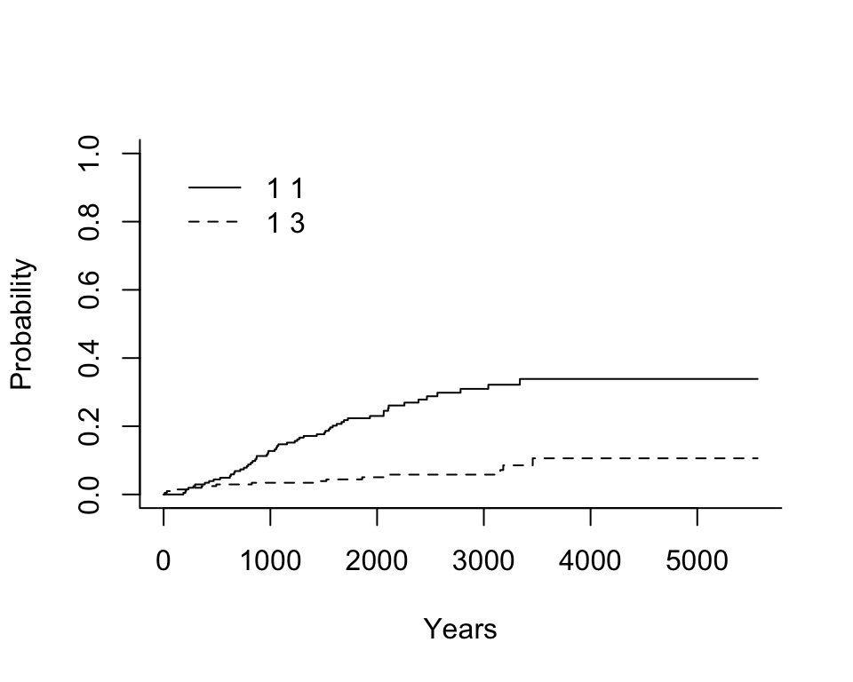
In de legende:
- Het eerste getal geeft de groep aan, in dit geval is er slechts een globale schatting, dus het is \(1\) voor beide…
- Het tweede getal geeft het type gebeurtenis aan, in dit geval is het de ononderbroken lijn \(1\) voor de dood door melanoom en de stippellijn \(3\) voor de dood door andere oorzaken.
Zet de cumulatieve incidentie uit - ggcompetingrisks
We kunnen ook de cumulatieve incidentie berekenen met behulp van de ggs-competingrisks functie van het survminer pakket.
In dit geval krijgen we een panel gelabeld volgens de groep en een legenda gelabeld evenement, met vermelding van het type evenement voor elke regel.
In the legenda:
- Het eerste getal geeft de groep aan, in dit geval is er alleen een overall schatte en is \(1\) voor beiden;
- Het tweede getal geeft de gebeurtenis type aan, in dit geval is de doorlopende lijn \(1\) voor overleden aan melanoma en de stippellijn is \(3\) voor overleden vanwege overleden vanwege andere oorzaken.
Plot de cumulatieve incidentie - ‘ggcompetingrisks’
We kunnen de cumulatieve incidentie ook plotten met de ggscompetingrisks functie van het survminer pakket.
In dit geval krijgen we een panel gelabeld volgens de groep en een legenda gelabeld evenement, met vermelding van het type evenement voor elke regel.
Opgelet
- Je kunt de optie
multiple_panels = FALSEgebruiken om alle groepen op een enkel panel afgedrukt te krijgen;
- anders dan bij
Rbasis gaat de y-as niet standaard naar 1, dus die moet je handmatig aanpassen
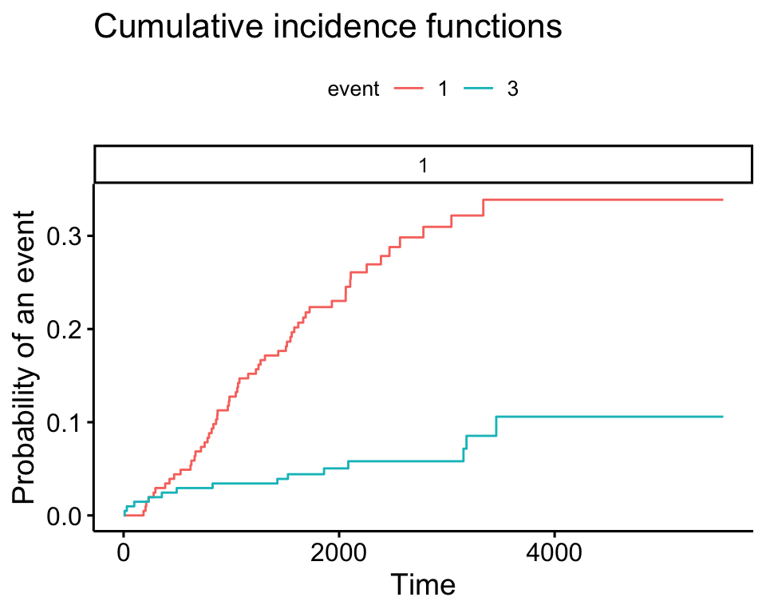
Vergelijken van cumulatieve incidentie tussen groepen
In cuminc wordt de Gray’s test gebruikt voor tussen-groepen tests.
Als voorbeeld vergelijken we de Melanoma uitkomsten volgens ulcer, de aan- of afwezigheid van ulceratie (zweervorming). De resultaten hiervan vind je in Tests.
stat pv df
1 26.120719 3.207240e-07 1
3 0.158662 6.903913e-01 1Plotten van cumulatieve incidentie volgens groep - ‘ggcompetingrisks’
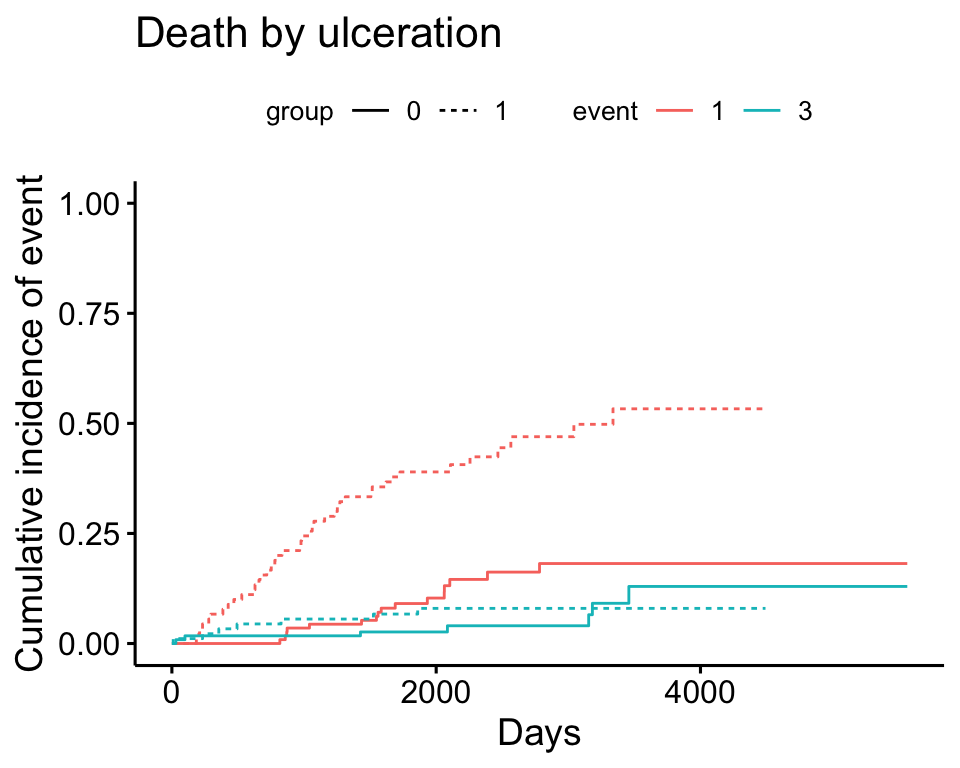
Plotten van cumulatieve incidentie per groep - handmatig
Opgelet Persoonlijk vind ik ggcompetingrisks functie lastig, vooral vergeleken met ggsurvplot. Het plotten doe ik veelal door eerst te zorgen voor een schone dataset van de cuminc fit resultaten en pas daarna de resultaten te plotten. Kijk maar eens naar de broncode hieronder.
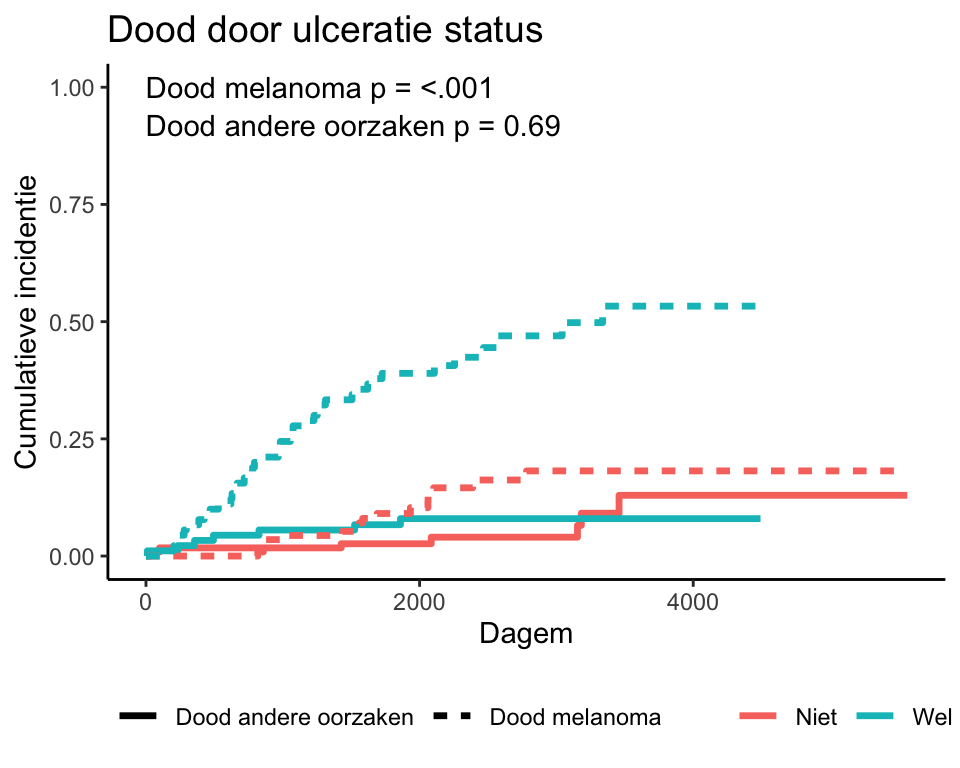
Plotten van een enkele gebeurtenis type - handmatig
Vaak is slechts een van de soorten evenementen interessant, hoewel we nog steeds rekenschap willen afleggen van de concurrerende gebeurtenis. In dat geval kan de gebeurtenis van belang alleen worden uitgezet. Nogmaals, ik doe dit handmatig door eerst een nette dataset te maken van de cuminc fit resultaten en dan de resultaten te plotten. Zie hieronder:
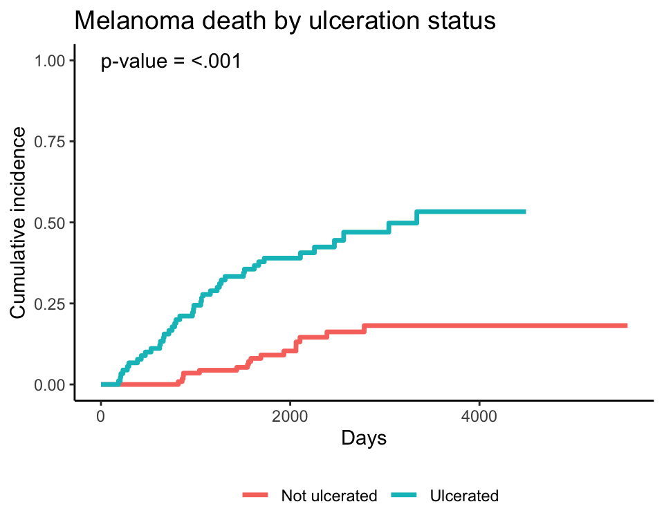
Getallen toevoegen aan de risicotabel
Misschien wil je de getallen van de risicotabel toevoegen aan een cumulatieve incidentiegrafiek. Hier weet ik geen eenvoudige manier voor.
- Maak een grafiek met basis
R,ggcompetingrisksofggplot - Haal het getal van de risico tabel van
ggsurvplotdoorsurvfitte gebruiken waar alle gebeurtenissen tellen als een enkel eindpunt- Dwing de assen zodat ze dezelfde limieten, breekpunten en titels hebben;
- Wees er zeker van dat de kleuren/lijntypen matchen met de labels;
- Zorg ervoor dat de lettergrootte steeds hetzelfde is;
- Dwing de assen zodat ze dezelfde limieten, breekpunten en titels hebben;
- Combineer dan de grafiek en de risicotabel. Ik gebruik hiervoor de
plot_gridfunctie van hetcowplotpakket;- Ik weet niet hoe ik de tekstgrootte van “Number at risk” moet veranderen…

Concurrerende risico regressie
Twee benaderingen:
- Oorzaak-specifieke gevaren (’hazards)
- snelheid van het optreden van het gegeven type van gebeurtenis die op dit moment gebeurtenis-vrij zijn
- geschat met behulp van Cox regressie (
coxphfunctie)
- Subdistributierisico’s
- snelheid van het optreden van het gegeven type gebeurtenis bij proefpersonen die nog geen gebeurtenis van dat type hebben meegemaakt
- geschat met behulp van Fine-Gray regressie (
crrfunctie)
Concurrerende risico regressie in Melanoma data - subdistributie hazard benadering
Laten we zeggen dat we geïnteresseerd zijn in het effect van leeftijd en geslacht op de dood door melanoom, met de dood door andere oorzaken als een concurrerende gebeurtenis.
Opmerkingen:
crrvereist specificatie van covariaten als een matrix- Als er meer dan één gebeurtenis van belang is, kunt u de resultaten voor een andere gebeurtenis opvragen met behulp van de
failcodeoptie, standaard worden de resultaten geretourneerd voorfailcode = 1.
Let’s say we’re interested in looking at the effect of age and sex on death from melanoma, with death from other causes as a competing event.
convergence: TRUE
coefficients:
sex age
0.58840 0.01259
standard errors:
[1] 0.271800 0.009301
two-sided p-values:
sex age
0.03 0.18 In het vorige voorbeeld werden zowel sex en agegecodeerd als numerieke variabelen. De crr functie kan niet op een natuurlijke manier omgaan met karaktervariabelen en je krijgt een fout. Dus als er karaktervariabelen aanwezig zijn moeten we dummy-variabelen maken met behulp van model.matrix.
Formatteren van de resultaten van van crr
Output van crr wordt niet ondersteund door broom::tidy() of noch door gtsummary::tbl_regression() op dit moment. Als alternatief, gebruik de (niet flexibele, maar beter dan niks?) mvcrrres van mijn ezfun pakket
| HR (95% CI) | p-value | |
|---|---|---|
| sex | 1.8 (1.06, 3.07) | 0.03 |
| age | 1.01 (0.99, 1.03) | 0.18 |
Concurrerende risico’s regressie in de gegevens van Melanoom - oorzaak-specifieke gevarenbenadering
Censor alle onderwerpen die niet voor de gebeurtenis van belang zijn, in dit geval de dood door melanoom, en gebruik coxph zoals voorheen. Dus patiënten die zijn overleden aan andere oorzaken worden nu gecensord voor de oorzaak-specifieke gevarenbenadering van concurrerende risico’s.
De resultaten kunnen worden geformatteerd met broom::tidy() of gtsummary::tbl_regression().
| term | estimate | std.error | statistic | p.value |
|---|---|---|---|---|
| sex | 1.818949 | 0.2676386 | 2.235323 | 0.0253961 |
| age | 1.016679 | 0.0086628 | 1.909514 | 0.0561958 |
| Characteristic | HR1 | 95% CI1 | p-value |
|---|---|---|---|
| sex | 1.82 | 1.08, 3.07 | 0.025 |
| age | 1.02 | 1.00, 1.03 | 0.056 |
|
1
HR = Hazard Ratio, CI = Confidence Interval
|
|||
Wat hebben we gedaan?
- De basis van de overlevingsanalyse met inbegrip van de Kaplan-Meier overlevingsfunctie en Cox-regressie
- Oriëntatieanalyse en tijdsafhankelijke covariaten
- Cumulatieve incidentie en regressie voor concurrerende risicoanalyses